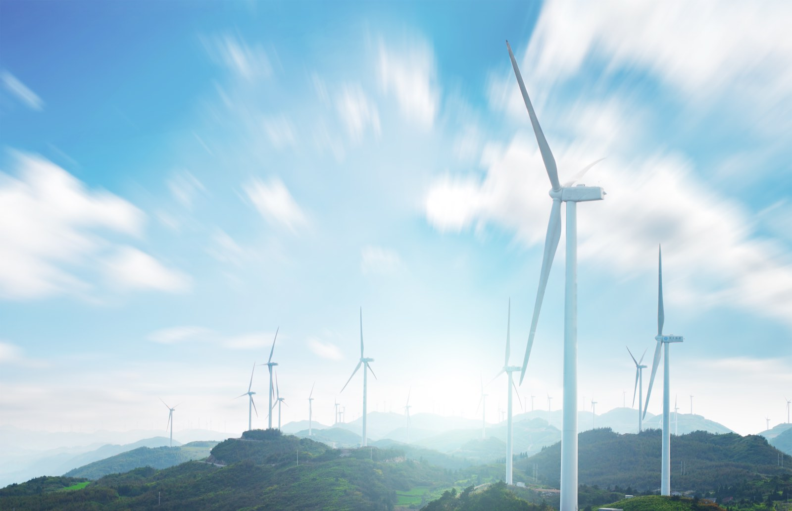
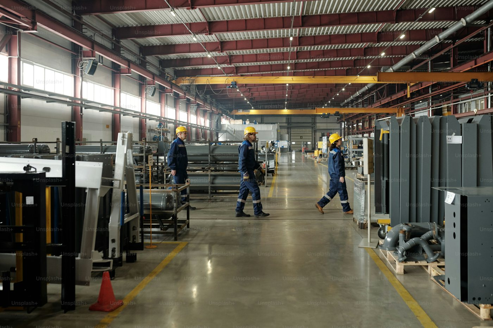
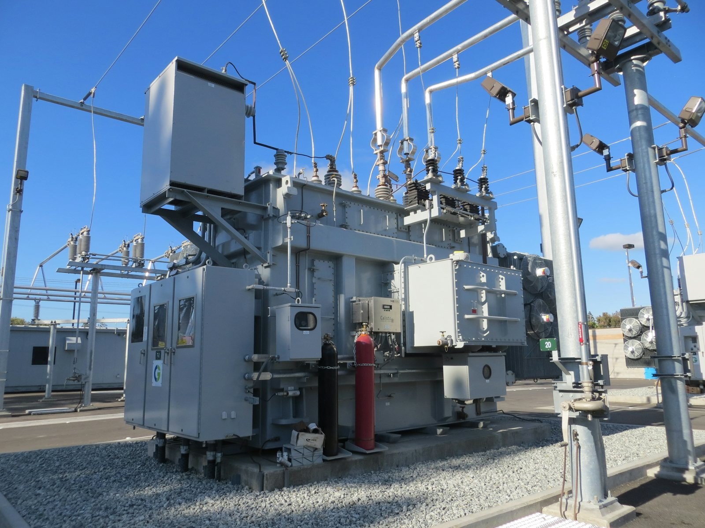
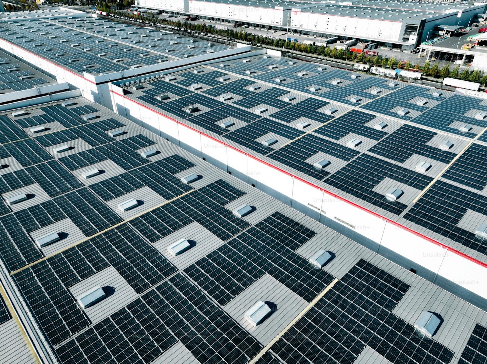
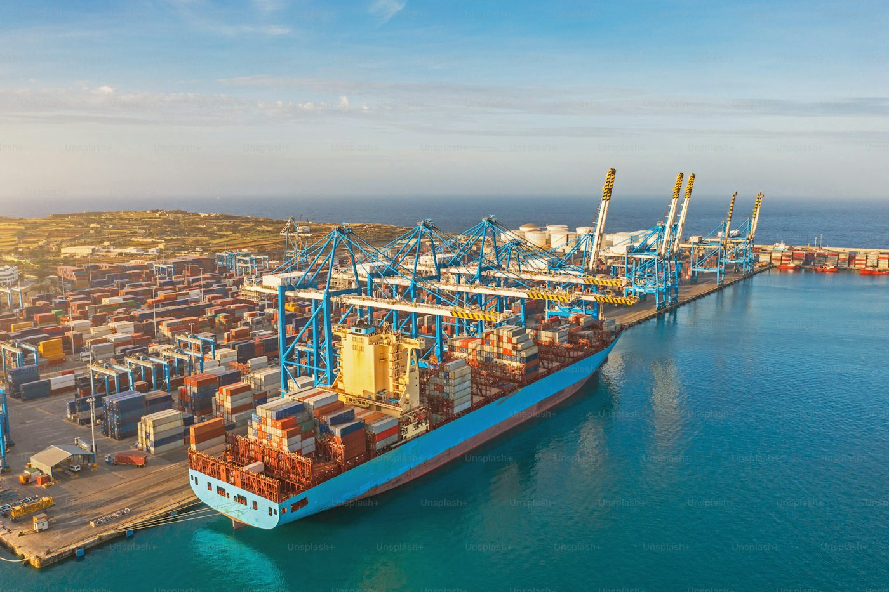

05 ─ Green Power Trading
綠電交易服務
綠電不缺買家，缺的是把需求、供給與法規條件兜在一起的人。
Overview
企業要滿足 RE100，第一個問題往往不是價格，而是：該買多少、什麼時候買、用什麼方式買，以及買到之後怎麼申報。
我們從您的實際用電曲線出發，試算合理的採購量與時程，再從自有與合作案場中媒合適合的供給，並協助完成轉供登記與憑證移轉。
自有案場與合作電廠雙軌供給，不受單一來源限制
協助評估直供、轉供與憑證採購三種路徑的成本差異
契約條款與轉供流程全程協助，含台電轉供平台登記
提供 RE100、CDP 與 SBTi 申報所需的憑證與佐證文件
What We Do
服務內容
-
 01
01用電盤點與需求試算
分析近一至三年的用電資料，試算達成特定綠電比例所需的採購量與逐年時程。
-
 03
03契約規劃與轉供執行
協助 CPPA 條款審閱、轉供比例設定與台電轉供平台登記，降低行政與履約風險。
-
 04
04憑證移轉與申報佐證
完成 T-REC 憑證移轉，並提供 RE100、CDP 與供應鏈問卷所需的佐證文件。
Specifications
交易
交易
條件
實際條件依供給案場、採購量與契約年限協商，以下為常見範圍。
契約年限3 – 20年
交易方式直供 / 轉供 / 憑證
憑證類型T-REC 國家再生能源憑證
建議最小採購量500MWh／年
電價機制固定價 / 指數連動
綠電來源太陽能 為主
申報支援RE100 / CDP / SBTi
轉供平台台電電力轉供作業平台
Process
服務流程
-
01
用電資料盤點
蒐集各廠區近年用電資料與電費單，釐清契約容量、時間電價與用電曲線特性。
-
02
需求試算與路徑比較
試算不同綠電比例目標下的採購量，並比較直供、轉供與憑證採購的成本與可行性。
-
03
供給媒合
從自有與合作案場中媒合供給來源，提供價格、年限與交付穩定度的比較表。
-
04
簽約與轉供登記
協助契約條款審閱與簽署，完成台電轉供平台登記與轉供比例設定。
-
05
履約管理與憑證申報
按月追蹤轉供電量與憑證核發，提供申報所需的文件與佐證資料。
Good Fit
這項服務適合這些對象
- RE100 會員企業

受客戶供應鏈減碳要求的製造業- 電子業與半導體供應鏈

用電大戶綠電義務對象
已有自建光電但仍有缺口的企業
欲提前布局碳費與 CBAM 的企業
不確定自己的條件適不適合？把現況資料給我們， 一次免費評估就能得到答案。